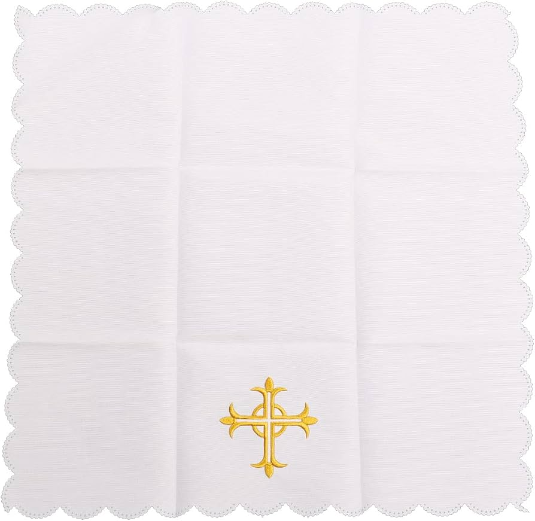
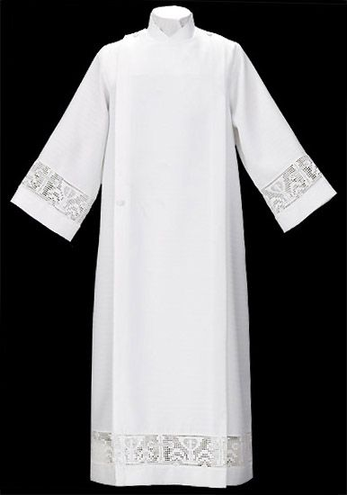

Cálice
O cálice é o vaso sagrado utilizado para conter o vinho que será consagrado durante a Missa. Após a consagração, ele contém o Sangue de Cristo e é utilizado na celebração da Eucaristia.
Âmbula ou Cibório
é o vaso sagrado utilizado para guardar e distribuir as hóstias consagradas. Também é usada para conservar a Eucaristia no sacrário e levá-la aos enfermos quando necessário.
Patena
é o vaso sagrado, geralmente em forma de prato, utilizado para colocar a hóstia que será consagrada durante a Missa. Também pode ser usada para apoiar a hóstia durante a distribuição da Comunhão.
Pala
A pala é uma pequena peça quadrada e rígida, revestida de tecido, utilizada para cobrir o cálice durante a Missa. Sua função é proteger o vinho consagrado contra poeira, insetos ou outras impurezas.
Manustérgio
é uma pequena toalha de linho ou algodão utilizada pelo sacerdote para enxugar as mãos durante o rito do lavabo e, quando necessário, para secar os dedos após a purificação dos vasos sagrados.
Bacia
é o recipiente utilizado no rito do lavabo, para receber a água derramada sobre as mãos do sacerdote. Ela é usada juntamente com a jarra e o manustérgio como sinal de purificação.

Corporal
é um pequeno pano de linho branco estendido sobre o altar durante a Liturgia Eucarística. Sobre ele são colocados o cálice, a patena e outros vasos sagrados, ajudando a recolher eventuais partículas da Eucaristia.
Velas
são utilizadas nas celebrações litúrgicas como sinal da presença de Cristo, Luz do mundo. Elas acompanham o altar, o Evangelho e outras celebrações, expressando reverência, oração e solenidade.
Galhetas
são pequenos recipientes utilizados para levar a água e o vinho que serão apresentados na Liturgia Eucarística. Esses líquidos são usados na preparação do cálice antes da consagração.
Sineta
é um pequeno sino utilizado para destacar os momentos mais importantes da Missa, especialmente durante a Consagração, quando o pão e o vinho se tornam o Corpo e o Sangue de Cristo.
Lecionário
é o livro litúrgico que reúne as leituras bíblicas proclamadas na Missa e em outras celebrações. Organizado conforme o Ano Litúrgico, ele contém as leituras do Antigo Testamento, os Salmos, as Cartas e os Evangelhos para cada celebração.
Missal Romano
é o principal livro litúrgico utilizado pelo sacerdote na celebração da Missa. Ele contém as orações, os ritos, as rubricas e as orientações necessárias para a celebração da Eucaristia ao longo de todo o Ano Litúrgico.
Sanguíneo
é um pequeno pano de linho branco utilizado para enxugar o cálice, os vasos sagrados e os lábios do sacerdote após a Comunhão. Também serve para recolher com respeito eventuais gotas do Preciosíssimo Sangue de Cristo durante a purificação dos vasos sagrados.
Hóstia
é o pão feito de trigo e água utilizado na celebração da Eucaristia. Durante a Consagração, torna-se o Corpo de Cristo e é distribuída aos fiéis na Comunhão.
Toalha Do Altar
é um pano branco que reveste o altar durante a celebração da Missa. Além de demonstrar respeito e dignidade ao altar, serve de base para os vasos sagrados e os demais objetos utilizados na Liturgia Eucarística.

Alva
é uma veste litúrgica branca usada pelos ministros ordenados e por outros ministros que exercem funções na celebração. Ela simboliza a dignidade e a pureza próprias do serviço litúrgico e é vestida sob as demais vestes litúrgicas.
Véu Umeral
é uma veste litúrgica usada sobre os ombros para segurar ou transportar objetos sagrados, especialmente o ostensório com o Santíssimo Sacramento.É usado principalmente nas procissões eucarísticas (como Corpus Christi) e em outras celebrações em que se conduz a Eucaristia com solenidade.
Casula Roxa
é a veste litúrgica usada pelo sacerdote nas celebrações dos tempos de Advento e Quaresma, além de celebrações penitenciais e exéquias. Sua cor representa penitência, conversão e preparação espiritual. Usado por (padre/bispo), representa um celebrante líturgico, usado em celebrações e é usado por cima da alva e estola.
Casula Verde
é a veste litúrgica usada pelo sacerdote principalmente no Tempo Comum. Sua cor representa a esperança e o crescimento da vida cristã, acompanhando as celebrações que não pertencem a um tempo litúrgico específico. Usado por (padre/bispo), representa um celebrante líturgico, usado em celebrações e é usado por cima da alva e estola.
Casula Branca
é a veste litúrgica usada pelo sacerdote nas celebrações de Natal, Páscoa, solenidades do Senhor, festas da Virgem Maria e dos santos que não são mártires. Sua cor representa alegria, luz, glória e a ressurreição de Cristo. Usado por (padre/bispo), representa um celebrante líturgico, usado em celebrações e é usado por cima da alva e estola.
Casula Preta
é uma veste litúrgica utilizada pelo sacerdote nas Missas pelos fiéis defuntos e em celebrações de exéquias, quando permitido. Sua cor expressa luto, dor pela morte e esperança na ressurreição prometida por Cristo. Usado por (padre/bispo), representa um celebrante líturgico, usado em celebrações e é usado por cima da alva e estola.
Casula Vermelha
é a veste litúrgica usada pelo sacerdote nas celebrações da Paixão do Senhor, Pentecostes, festas dos apóstolos, evangelistas e mártires. Sua cor representa o fogo do Espírito Santo, o sangue derramado por Cristo e pelos mártires e o testemunho da fé. Usado por (padre/bispo), representa um celebrante líturgico, usado em celebrações e é usado por cima da alva e estola.
Estola Vermelha
é uma faixa litúrgica de cor vermelha usada nas celebrações que recordam o Espírito Santo, a Paixão de Cristo e o testemunho dos mártires. Sua cor representa o fogo do Espírito Santo, o sangue derramado por Cristo e a fidelidade da fé. Usado por (diácono/padre/bispo), representa um ministro ordenado, usado em celebrações e é usado por cima da alva.
Estola Preta
é usada nas celebrações pelos fiéis defuntos e exéquias, quando permitida. Sua cor representa o luto, a tristeza pela morte e a esperança na ressurreição. Usado por (diácono/padre/bispo), representa um ministro ordenado, pode ser usado em não celebrações e é usado por cima da alva.
Estola Verde
é usada principalmente nas celebrações do Tempo Comum. Sua cor representa a esperança, o crescimento espiritual e a continuidade da vida cristã .Usado por (diácono/padre/bispo), representa um ministro ordenado, pode ser usado em não celebrações e é usado por cima da alva.
Estola Roxa
é usada nos tempos de Advento e Quaresma, além de celebrações penitenciais. Sua cor representa penitência, conversão e preparação espiritual. Usado por (diácono/padre/bispo), representa um ministro ordenado, pode ser usado em não celebrações e é usado por cima da alva.
Estola Branca
é usada nas celebrações de Natal, Páscoa, solenidades do Senhor, da Virgem Maria e dos santos não mártires. Sua cor representa alegria, luz, pureza e a glória da ressurreição de Cristo. Usado por (diácono/padre/bispo), representa um ministro ordenado, pode ser usado em não celebrações e é usado por cima da alva.
Báculo
é um bastão utilizado pelo bispo em algumas celebrações litúrgicas. Ele simboliza o cuidado pastoral do bispo com o povo de Deus, lembrando a figura do pastor que guia seu rebanho.
Mitra
é o chapéu litúrgico usado pelo bispo em celebrações solenes. Ela representa a dignidade do seu ministério e o serviço de ensinar e conduzir a Igreja.
Acetre
é o recipiente utilizado para conter a água benta nas celebrações litúrgicas. Ele é usado juntamente com o aspersório para a aspersão de pessoas, objetos e lugares durante bênçãos e outros ritos da Igreja. em ritos de aspersão, como na Vigília Pascal, em algumas Missas dominicais, nas exéquias e em diversas bênçãos realizadas pela Igreja.
Naveta
é um pequeno recipiente utilizado para guardar o incenso durante as celebrações litúrgicas. Geralmente acompanha uma pequena colher, usada para colocar o incenso sobre as brasas do turíbulo antes ou durante a incensação. Usado junto ao turíbulo
Círio Pascal
é uma grande vela acesa na Vigília Pascal, símbolo de Cristo Ressuscitado, luz do mundo. Permanece aceso durante o Tempo Pascal e também é utilizado nas celebrações do Batismo e das Exéquias, recordando a vitória de Cristo sobre a morte.
Turíbulo
O turíbulo é um recipiente metálico suspenso por correntes, utilizado para queimar incenso durante as celebrações litúrgicas solenes. É usado para incensar o altar, a cruz, o Evangelho, as oferendas, o sacerdote, a assembleia e o Santíssimo Sacramento, como sinal de honra, reverência e oração.
Ostensório
é o vaso sagrado utilizado para expor a hóstia consagrada à adoração dos fiéis e para conduzir o Santíssimo Sacramento em procissões, como a de Corpus Christi. Seu formato permite que a Eucaristia fique visível, favorecendo a adoração e a bênção com o Santíssimo.
Teca
é um pequeno recipiente metálico utilizado para transportar a hóstia consagrada, especialmente para a Comunhão dos enfermos e das pessoas impossibilitadas de participar da Missa. Ela protege a Eucaristia durante o transporte e garante seu devido respeito.
Altar
é a mesa sagrada onde se celebra a Liturgia Eucarística. Sobre ele são apresentados os dons do pão e do vinho e realizada a consagração, tornando-se o centro da celebração da Santa Missa.
Ambão
é o local de onde são proclamadas as leituras da Sagrada Escritura, o Salmo Responsorial e o Evangelho, além da homilia e da Oração dos Fiéis, quando previsto. Ele destaca a importância da Palavra de Deus na celebração litúrgica.
Credência
é a mesa auxiliar onde ficam preparados os vasos sagrados, as galhetas e os demais objetos utilizados durante a celebração da Missa. Dela, se levam os itens necessários ao altar nos momentos apropriados.
Sacrário
é o local sagrado onde são conservadas as hóstias consagradas após a Missa. Nele permanece a presença real de Cristo na Eucaristia, destinada à adoração dos fiéis e à Comunhão dos enfermos.
Sacrístia
é o local da igreja onde são guardados os paramentos, os vasos sagrados e os demais objetos litúrgicos. É também o espaço onde os ministros, padres e coroinhas se preparam para a celebração da Missa e de outros ritos litúrgicos.